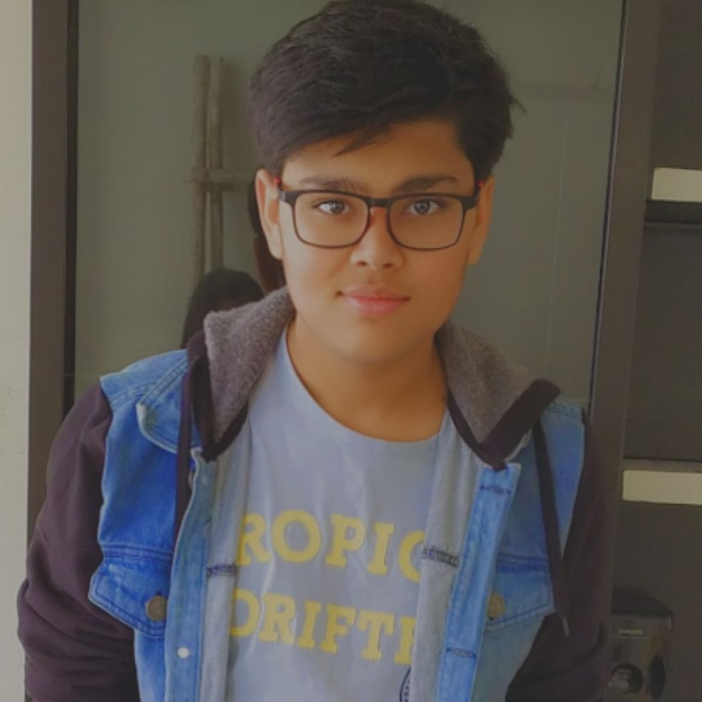

My Journey
Hello Everyone,
This is Shikhar Agrawal,
A Computer Engineer in the making currently studying at SRM UNIVERSITY, Kattankulathur.
I started my coding at the age of 15 (a late start but better late than never) when my father was doing some game development and i was so inspired that i started questioning and learning what is coding and what are the different types of coding.
Finally in 11th i took Computer Science as my 5th subject and learned Python (My First Language) I developed graphs, UI and many more... then as my Board Project i developed games like Sudoku and Ludo,
that's when the complete passion to take up Computer Engineering and get into the field of coding of any type be it Web or App or Game Development rose.
I am thankful for the journey that lead me here and i am proud to say that i am happy to pursue ahead in my subject of interest.
HOBBIES:
Badminton, Sleeping😂, and most of all Coding.